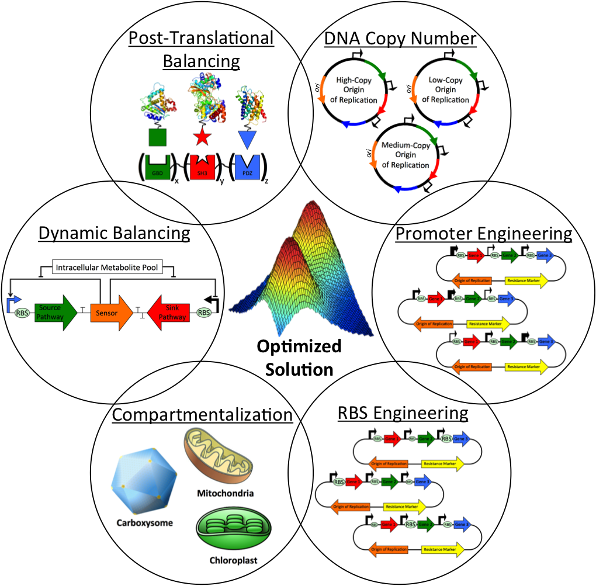
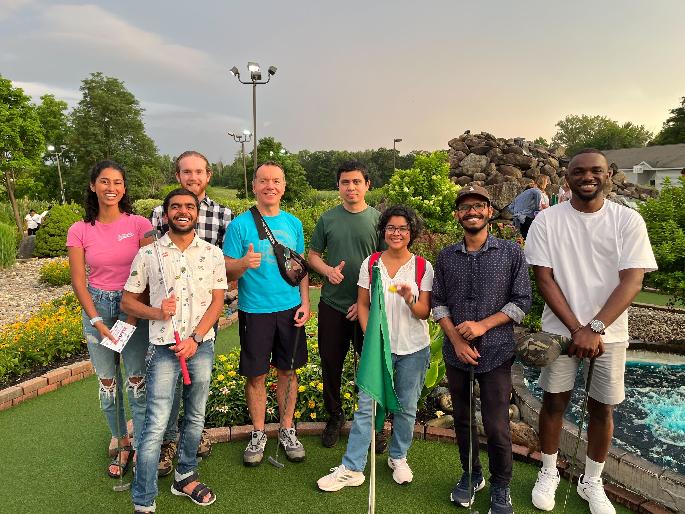
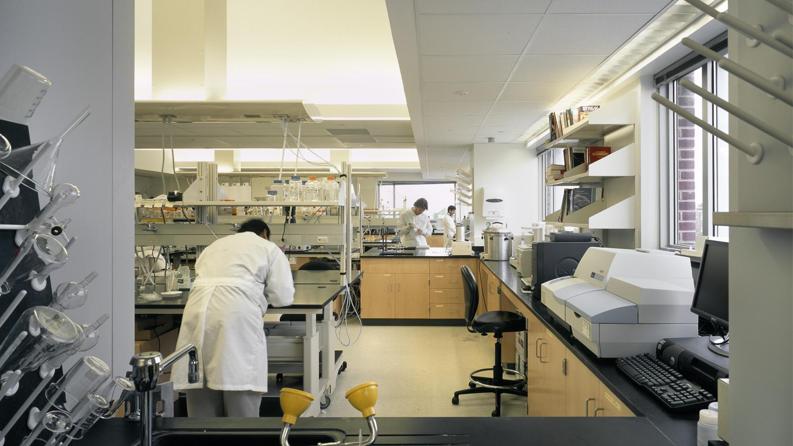

Koffas Research Group at Rensselaer Polytechnic Institute
Our overall research effort is focused on Network, Metabolic and Cellular Engineering that aims at improvement of cellular properties or design new metabolic circuits using synthetic biology tools. More specifically, our research encompasses two broad themes: the biosynthesis of natural products from animal and plant species, and the development of microbial systems that can utilize different forms of waste (plastic waste, greenhouse gases etc.) as carbon and energy source. In the area of natural products biosynthesis, our lab has pioneered the animal-free production of animal sulfated glycosaminoglycans, such as chondroitin sulfate and heparin, as well as spider silk proteins and elastins. In the area of plant natural products, our lab was the first to demonstrate the biosynthesis of numerous polyphenolic compounds, such as flavonoids, stilbenes, curcuminoids and anthocyanins. In all cases, we use such natural products for the development of novel metabolic engineering techniques that include: protein engineering of plant P450s and glycoproteins, dynamic regulation of metabolic pathways for improving production titers and yields, and the development of engineered co-cultures for division of labor among microbial species.

The Group

Koffas Group, August 2023.
From left:
Sahiti Tamirisakandala ,
Saurabh Rastogi ,
Jonathan Hudson,
Dr.Mattheos Koffas,
Dr.Anarul Houque,
Aditi Dey Tithi,
Md Tariful Islam,
Steve Eshiemogie,
Not pictured:
William Lawler,
Dr.Shweta Patil,
Dr.Douglas Nortberto,
Josh Finkelstein
Suttavadee Junyakul
Recent News

MARCH 2024: CBS News Albany runs a story on the gene editing work we are doing for Alzheimer's Treatment
Read More
HERE
Recent Publications
Raethong, N., Thananusak, R., Cheawchanlertfa, P., Prabhakaran, P., Rattanaporn, K., Laoteng, K., Koffas, M. and Vongsangnak, W., 2023. Functional genomics and systems biology of Cordyceps species for biotechnological applications. Current Opinion in Biotechnology, 81, p.102939.Connor, A., Wigham, C., Bai, Y., Rai, M., Nassif, S., Koffas, M. and Zha, R.H., 2023. Novel insights into construct toxicity, strain optimization, and primary sequence design for producing recombinant silk fibroin and elastin-like peptide in E. coli. Metabolic Engineering Communications, 16, p.e00219.
Paliya, B.S., Sharma, V.K., Tuohy, M.G., Singh, H.B., Koffas, M., Benhida, R., Tiwari, B.K., Kalaskar, D.M., Singh, B.N. and Gupta, V.K., 2023. Bacterial glycobiotechnology: A biosynthetic route for the production of biopharmaceutical glycans. Biotechnology Advances, p.108180.
Connor, A., Lamb, J., Delferro, M., Koffas, M. and Zha, R., 2023. Microbial Upcycling of Polyethylene into Recombinant Proteins.
Xiao, Z., Connor, A.J., Worland, A.M., Tang, Y.J., Zha, R.H. and Koffas, M., 2023. Silk fibroin production in Escherichia coli is limited by a positive feedback loop between metabolic burden and toxicity stress. Metabolic Engineering, 77, pp.231-241.
Watthanasakphuban, N., Nguyen, L.V., Cheng, Y.S., Show, P.L., Sriariyanun, M., Koffas, M. and Rattanaporn, K., 2023. Development of a Molasses-Based Medium for Agrobacterium tumefaciens Fermentation for Application in Plant-Based Recombinant Protein Production. Fermentation, 9(2), p.149.
Links
For more information about the department and Rensselaer Polytechnic Institute:
Collaborators

Dr. R Helen Zha, Rensselaer Polytechnic Institute

Dr. Blanca Barquera, Rensselaer Polytechnic Institute

Dr. James Swartz, Stanford

Dr. Richard Gross, Rensselaer Polytechnic Institute


Dr. Gyoo Yeol Jung, POSTECH

Dr. Wilfred Chen, University of Delaware